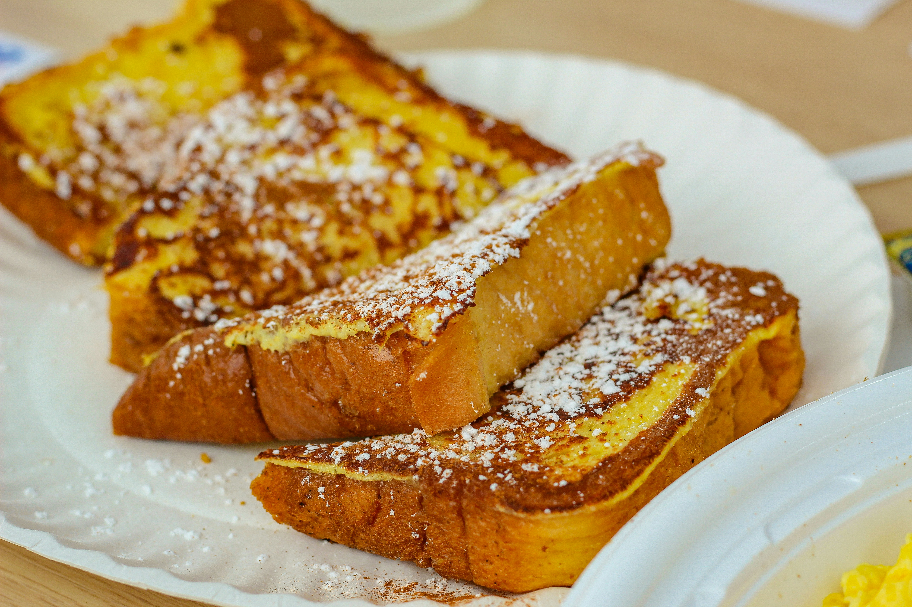

<<!DOCTYPE html>
<html lang="ja">
<head>
  <meta charset="UTF-8">
  <meta name="viewport" content="width=device-width, initial-scale=1.0">
  <title>Cafe dayo</title>

  <!-- Google Fonts -->
  <link href="https://fonts.googleapis.com/css2?family=Noto+Serif+JP&family=Poppins:wght@300;500&display=swap" rel="stylesheet">
<link rel="stylesheet" href="style.css">
</head>

<body>
<header>
 <div class="header-inner">
    <div class="logo">Cafe dayo</div>

    <!-- ハンバーガーボタン -->
    <div class="menu-btn" id="menu-btn">
      ☰
    </div>
  </div>

  <!-- メニュー -->
 <nav class="nav" id="nav">
  <a href="index.html">TOP</a>
  <a href="about.html">店舗について</a>
  <a href="menu.html">メニュー</a>
  <a href="accese.html">アクセス</a>
  <a href="contact.html">お問い合わせ</a>
</nav>
<script>
const btn = document.getElementById("menu-btn");
const nav = document.getElementById("nav");

btn.addEventListener("click", () => {
  nav.classList.toggle("active");
});
</script>
</header>

<div class="hero">
  mettya&atarasi
</div>

<section>
  <h2>Concept</h2>
  <p style="text-align:center;">
    ゆったりとした時間を楽しめる、ナチュラルで落ち着いた空間のカフェ。<br>
    心地よい音楽とともに、特別なひとときをお過ごしください。
  </p>
</section>

<section>
  <h2>Menu</h2>
  <div class="menu">
    <div class="menu-item">
      <h3>カフェラテ</h3>
    
      <p>¥500</p>
    </div>
    <div class="menu-item">
      <h3>チーズケーキ</h3>
      
      <p>¥600</p>
    </div>
    <div class="menu-item">
      <h3>フレンチトースト</h3>
      
      <p>¥700</p>
    </div>
  </div>
</section>

<section>
  <h2>Gallery</h2>
  <div class="gallery">
    
    
    
  </div>
</section>

<section>
  <h2>Access</h2>
  <iframe src="https://www.google.com/maps/embed?pb=!1m18!1m12!1m3!1d2914.7055236229776!2d141.34624918885493!3d43.0686606!2m3!1f0!2f0!3f0!3m2!1i1024!2i768!4f13.1!3m3!1m2!1s0x5f0b2974d2c3f903%3A0xa5e2b18cdd4a47a5!2z5pyt5bmM6aeF!5e0!3m2!1sja!2sjp!4v1774946274385!5m2!1sja!2sjp" width="600" height="450" style="border:0;" allowfullscreen="" loading="lazy" referrerpolicy="no-referrer-when-downgrade"></iframe>
<p>札幌駅から徒歩～分</p>
</section>

<footer>
  © 2026 Cafe Lumière
</footer>
<script src="script.js"></script>
</body>
</html>
